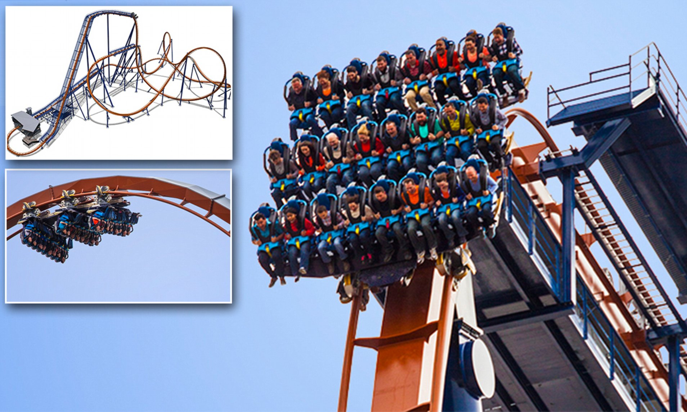
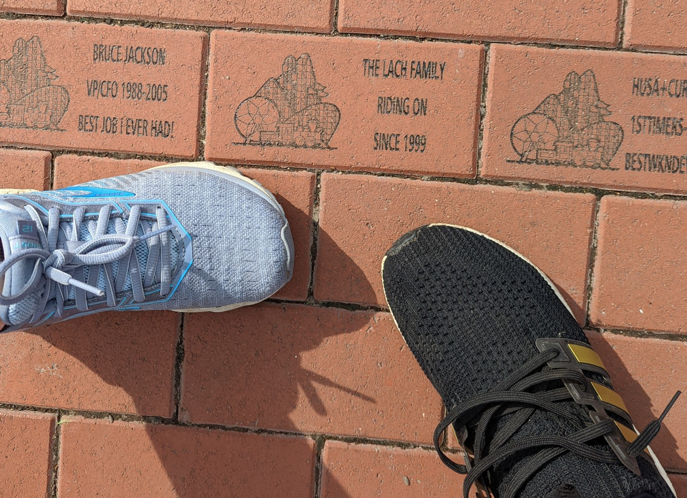

In 2015, I went on a first date with my now husband, Steve, at the Gamlin Whiskey House in CWE (rip, a corona casualty). During our first date conversation, he told me about his childhood trips to Cedar Point, an amusement park in Ohio. His family used to go every year for the roller coasters and water park. This being our first date and thinking this would come up ever again, I didn’t mention that I was afraid of roller coasters and hadn’t been on one since I was 11 years old.
One year later, Steve and I are driving 8 hours from St. Louis to Sandusky, Ohio to go to Cedar Point. We arrived at Cedar Point at twilight, and even as we rushed to a coaster line before the park closed, I was still in complete denial that I would have to get on a roller coaster. Slowly we inched closer to the front of the line, until finally, it was our time to board. As I strapped into my seat, reality hit. My stomach felt hollow and I began to panic.
We were about to ride the Valravn, a new roller coaster that had just opened that year. When it opened, it boasted record-breaking drop height and speed, with a 214ft drop and going up to 75 miles per hour. Its “most exciting” feature was that at the top of the 214ft drop, the train car would stop, just over the edge. Riders, especially front-row riders, would have to stare straight down the 90 degree drop for several seconds, before the brakes released and they were flung down hundreds of feet.

We were, of course, sitting in the first row.
The train began its journey and the riders around me cheered. The train began climbing, higher and higher. I looked over at Steve - he smiled and gave me jazz hands. All he could do as our bodies and arms were strapped tightly to our seats.
At the top of the climb, the track slowly turned to position itself at the top of the drop. Time seemed to slow down and speed up - the train was moving too quickly and yet it felt like hours were passing as the train moved ever closer to that 214ft drop.
Finally, the train began tilting us over the edge. I watched, in horror, as my body was leaned further and further over the edge, until our feet dangled in the air and we were nearly parallel to the 90 degree drop. I desperately pushed my body against gravity, into the back of my seat.
The train released. Our bodies hurtled downward.
In that moment, I accepted my fear. I accepted that this was the end of my life and I was going to die. With my new, morbid serenity, I released my body to the momentum. I stopped straining against my seat and accepted my fate.
But - miraculously, at the end of the drop, everyone had survived. The roller coaster continued on, through a couple of loops, another, smaller drop, finally depositing the wind-swept riders back at the entrance. I left my seat with wobbly legs and a new fascination with conquering death.
That was the first of our many trips to Cedar Point. I now love roller coasters, much to my sister’s consternation. (When we were kids, I refused many trips to Knott’s Berry Farm due to my fear of roller coasters, which she loved.) We often go to Cedar Point with Steve’s sister and her husband as well, rebirthing their childhood vacations to Cedar Point each summer. We eat bad amusement park food (pizza, chicken tenders, burgers), have passionate discussions about our strategy in which lines would be shortest, and laugh at our awful coaster pictures.

My Favorite Coasters at Cedar Point
Maverick
Maverick is a steel rollercoaster that debuted in 2007. At Cedar Point, all rides have a “theme,” and in many cases, the theme seems like an afterthought, a cheap and lazy marketing ploy. However, in the case of Maverick, the theme “the Wild West,” is spot on. Cedar Point’s website says that Maverick acts more like a bucking bronco than a coaster, and I wholeheartedly agree.
Maverick is > 10/10 fun. There is not a single second where you are wondering what the next “exciting” part is - it is happening to you right then, every second of this two minute and thirty second ride.
Some key features:
Unlike other coasters where you are gently rolled over the drop, gaining speed as you gain momentum from gravity, Maverick launches you through the initial climb (no slowly waiting for that first drop), and vaults you over the first drop of 105ft. The drop is at a 95 degree angle, curving sharply over the edge at the top of the drop, which exponentially improves the drop.
In the middle of the ride, you think the ride is about to slow down as it takes you into a metal tunnel. However, as soon as you get in the tunnel, it begins to speed up, going 400ft at 70 miles per hour in three seconds. The tunnel is also pitch black. (This is also where the picture is taken so you are guaranteed to not look cute). This fake-out reenergizes you for the second half of the ride.
The ride whips you through every twist and turn - no turn is taken smoothly or at a wide angle. It very much feels like a wild horse.
Steel Vengeance
Steel Vengeance, or SteVe for short, is the world’s first hybrid coater - both wood and steel. It was constructed on top of an old wooden coaster track, with new steel components, and opened in 2018. In proximity and theme, it is close to Maverick. While Maverick feels more like a wild horse, SteVe feels like a dangerous mine cart ride, with turns and twists that seem to defy gravity.
If you have not ridden a hybrid coaster before, SteVe is a unique experience. The designers did an excellent job not just building on top of a wooden coaster but incorporating it seamlessly into the experience of the ride itself. The coaster track takes you through the wooden frame - inside “tunnels” created by the previous wood frame and support, to make you feel as if you are exploring the inside of a roller coaster. The ride makes you laugh with joy at each new surprise, even as it thrills with its drops and turns.
Some key features:
When it opened, SteVe broke records for the longest airtime (27.2 seconds). Air time is time when there is negative G-force on your body, making your butt float up from your seat and making you feel “weight less”. This contributes to the “wild mine cart” feeling, as if you were flying through the track.
There are 4 inversions through the wooden frame - making it seem like you are twisting and turning through the “guts” of the old wooden coaster. This is very cool visually and often surprises you with steep turns and drops into the wooden frame, as if you are “diving in.”
For most roller coasters, the front of the train is the “best” seat and there is usually a longer line to sit at the front. The front of the train has a better view - so that upcoming drops and turns are surprising (compared to sitting in the middle or back of the train, where you can see what is going to happen from the way the cars in front of you are moving). This makes it feel (mentally) faster, as you have an unobstructed view of the environment speeding past you. Physics-wise, the cars in the back of the train actually go a bit faster, but for many rides, this does not really add to the experience as much as sitting in the front does. For SteVe however, the extra speed, in combination with how surprisingly and quickly the train does drops and turns, makes the back of a train a very fun experience.
Top Thrill Dragster
Top Thrill Dragster, or Dragster, is a steel roller coaster that opened in 2003. At the time, it was the tallest coaster in the world. It is the shortest ride in Cedar Point - with just a 17 second ride time. Despite the short ride time, Dragster has lines that rival other popular rides in Cedar Point, generally leaving riders waiting hours just to experience those 17 seconds.
Those 17 seconds are, as the name aptly suggests, “top thrill.” The track is essentially just one giant hill, 420ft tall at a 90 degree incline. Dragster takes you from a complete standstill to 120 miles per hour in just 3.8 seconds, shooting you up the hill, over the edge, then back down.
Some key features:
Dragster has, in my opinion, one of the best “anticipation” experiences before the ride starts. Typically, many coasters start the ride by climbing slowly up the track to the top of the drop. The slow ascent leads up anticipation of the drop to come, heightening the experience. Dragster takes this anticipation to a whole new level. As you wait for the ride to begin, the train sits still while they play loud car revving sounds. You stare at a giant drag race street light, waiting for the first yellow light, then the next, until finally the last light turns green. Then, before you can even think "Yay it's starting!" (or "Oh no it's starting"), you are shot forward with incredible accerleration.
Dragster is quite unique. Although there are now a handful of other coasters like this in the world, there is nothing quite like it in other rides in the park. If you want to experience what it’s like accelerating to hundreds of miles per hour in just a few seconds, I highly recommend trying Dragster.
This ride has the best, although short, view of all the Cedar Park coasters. At the top of the peak, the train slows down for a second, and at 420 feet in the air, you get an amazing view of Lake Erie in front of you. If you can remember to look around as you are shot back downward, you can also get a great birds eye view of the park.
Closed "For the Season"
In 2021, a piece of the track fell off during the ride. Unfortunately, parts of the line for Dragster go directly beneath the tracks. The piece, a “proxmity flag plate”, hit a person in line, severely injuring them.
Since then, the ride has been closed for investigation. Following an Ohio state investigation report that released early in 2022, Cedar Point announced that Dragster would remain closed for the 2022 season.
It is unclear when Cedar Point plans to open Dragster again. There are rumors that it may never open again, given the fact that this is an older ride (frequently down for repairs even when it was open), and that the person was very severely injured.